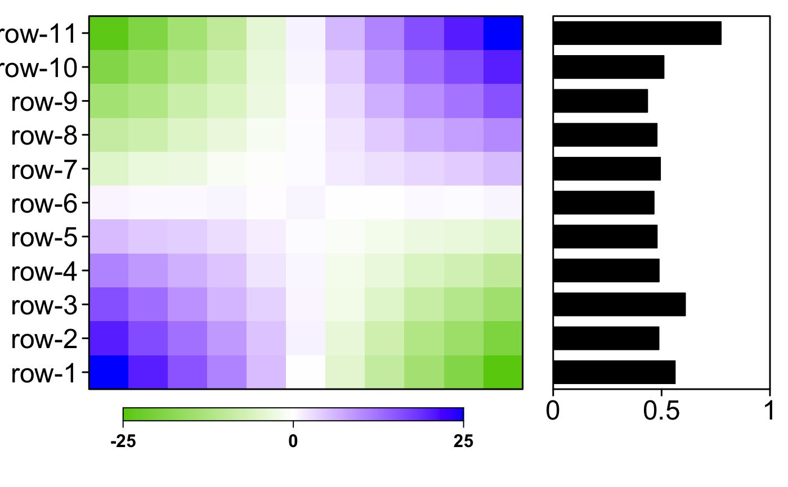

Create Colourkey
create.colourkey.RdA function for generating and placing a colour key. Good for use in multiplots when a smaller colour key is desired.
Usage
create.colourkey(
x,
scale.data = FALSE,
colour.scheme = c(),
total.colours = 99,
colour.centering.value = 0,
colour.alpha = 1,
fill.colour = 'darkgray',
at = NULL,
colourkey.labels.at = NULL,
colourkey.labels = colourkey.labels.at,
colourkey.labels.cex = 1,
placement = NULL
);Arguments
- x
Either a data-frame or a matrix from which the heatmap was created
- scale.data
Was the data for the heatmap scaled? Defaults to FALSE.
- colour.scheme
Heatmap colouring. Accepts old-style themes, or a vector of either two or three colours that are gradiated to create the final palette.
- total.colours
Total number of colours to plot.
- colour.centering.value
The center of the colour-map.
- colour.alpha
Bias to be added to colour selection (uses x^colour.alpha in mapping).
- fill.colour
The background fill (only exposed where missing values are present.
- at
A vector specifying the breakpoints along the range of x.
- colourkey.labels.at
A vector specifying the tick-positions on the colourkey.
- colourkey.labels
A vector specifying tick-labels of the colourkey
- colourkey.labels.cex
Size of colourkey labels. Defaults to 1
- placement
Location and size of the colourkey.
Examples
set.seed(1234567890);
x <- outer(-5:5, -5:5, '*') + matrix(nrow = 11, ncol = 11, data = runif(11 * 11));
colnames(x) <- paste('col', 1:11, sep = '-');
rownames(x) <- paste('row', 1:11, sep = '-');
y <- as.data.frame(x);
y$mean <- apply(x,1,mean);
# example of a simple multiplot with colourkey
heatmap1 <- create.heatmap(
x = t(x),
filename = NULL,
clustering.method = 'none',
scale.data = FALSE,
yaxis.lab = NA,
print.colour.key = FALSE,
colour.scheme = c('chartreuse3', 'white', 'blue'),
at = seq(-25, 25, 0.01)
);
#> Warning: max(x) = 25.9832547025289 is greater than max(at) = 25 Clipped data will be plotted
barplot1 <- create.barplot(
1:nrow(y) ~ mean,
y,
plot.horizontal = TRUE
);
create.multiplot(
plot.objects = list(heatmap1, barplot1),
# filename = tempfile(pattern = 'multiplot_with_colourkey', fileext = '.tiff'),
plot.layout = c(2,1),
panel.widths = c(2,1),
yat = list(1:nrow(y), NULL),
yaxis.labels = rownames(y),
xlimits = list(NULL, c(0,1)),
xat = list(NULL, seq(0,1,0.5)),
xaxis.labels = list(NULL, seq(0,1,0.5)),
x.spacing = 0,
print.new.legend = TRUE,
legend = list(
inside = list(
fun = BoutrosLab.plotting.general::create.colourkey(
x = x,
colour.scheme = c('chartreuse3', 'white', 'blue'),
at = seq(-25, 25, 0.01),
colourkey.labels.at = c(-25, 0, 25),
placement = viewport(just = 'left', x = 0.55, y = -0.55, width = 0.5)
)
)
),
bottom.padding = 4,
width = 10,
height = 8,
resolution = 500
);
#> Warning: max(x) = 25.9832547025289 is greater than max(at) = 25 Clipped data will be plotted
#> Warning: number of items to replace is not a multiple of replacement length
#> Warning: number of items to replace is not a multiple of replacement length
